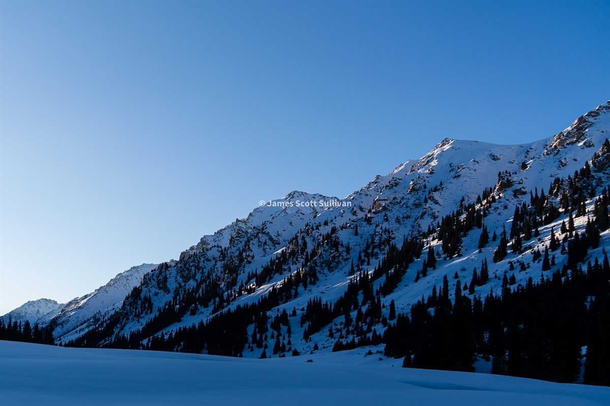

Best case, this place feels like a good coffee shop.
You came in for one thing. Now you are still here.
New England based / usually outside / camera nearby
I like trips that push the edge of my comfort zone and crack life open a little. This is a landing page for those adventures, with photos and writing meant to pull you into them with me.
What Keeps Coming Back
Kyrgyzstan, Key West, Istanbul, New Hampshire, Boston. Different maps, same feeling: get out, stay open, see what the day gives you.
You came in for one thing. Now you are still here.
Usually Some Mix Of This
A little weather. A little uncertainty. Good people. Water, ridgelines, camp jokes, and the stop you never planned on.
From the edit

Travel, weather, scale, movement.

Camp light, high peaks, cold-air quiet.

Trips are better when people stay in the frame.
Field notes
One huge summer road trip. One big day in the Whites. The writing is starting to pile up in a good way.
Fresh post
Post-road-trip, still needing a goal, and finally doing the Presi in one long shot.
Road trip
It starts with a layoff, a packed Subaru, Niagara, and the first push west.

Presidential Traverse / White Mountains
Madison to Jackson, with one very important hot dog stop in the middle.
Prints
A few frames carry enough story to deserve a wall.